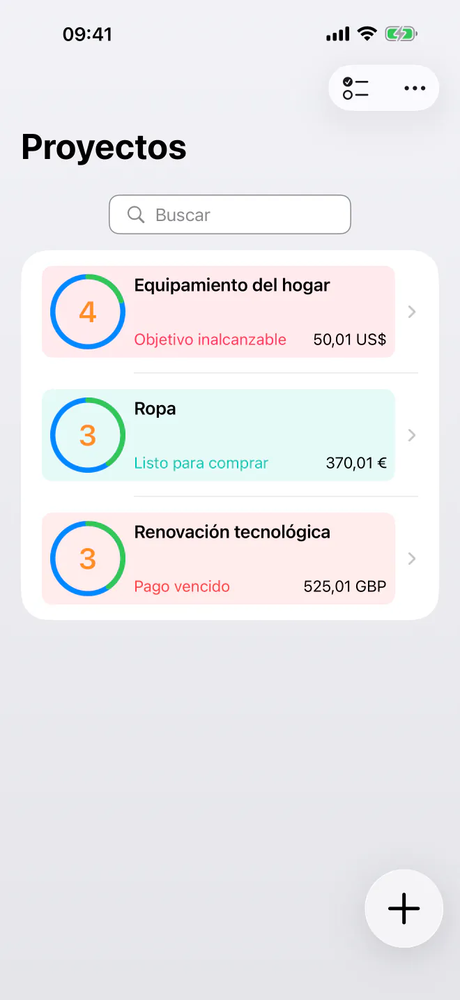
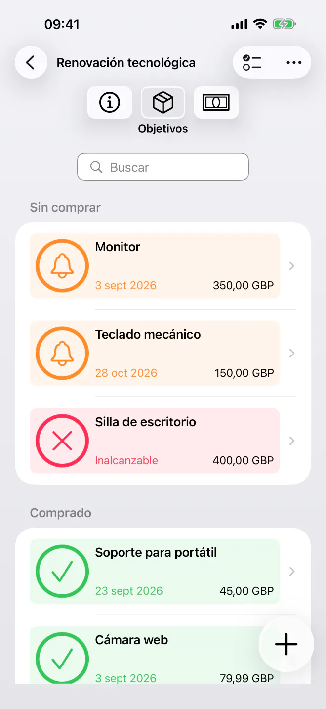
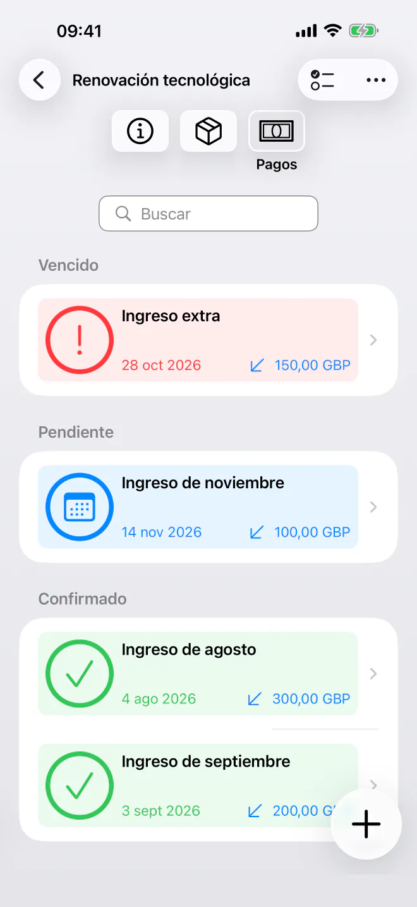
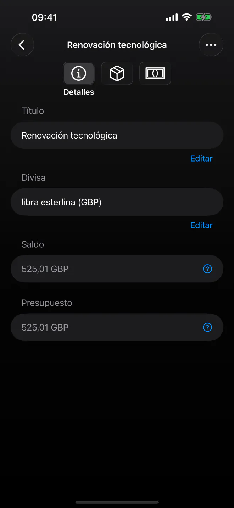

Sabe exactamente cuándo puedes comprar
Prioriza tus objetivos de ahorro y conoce la fecha más próxima para permitirte cada compra. Planificación sencilla y privada con cronologías automáticas. Sin cuenta.


Deja de adivinar cuándo podrás comprar por fin lo siguiente de tu lista. BudgetBear es una app sencilla y privada que convierte tus objetivos en una cronología de compras clara. Añade tus objetivos, define tus prioridades y planifica tus ingresos, todo en una interfaz tranquila y sin distracciones que respeta tu privacidad.
¿Listo para empezar a planificar tus compras? Descarga BudgetBear hoy mismo.
Por qué elegir BudgetBear
- 100 % privado y bajo tu control — Tus datos financieros se quedan únicamente en tu dispositivo. Sin cuentas propias, sin servidores de terceros y sin registros en la nube, jamás.
- Minimalista y enfocada — Una interfaz rápida y fácil de usar, centrada en hacer las cosas. Sin desorden ni complejidad innecesaria.
- Sabe exactamente cuándo puedes comprar — BudgetBear calcula la fecha más próxima en la que puedes permitirte cada objetivo, para que nunca tengas que adivinar.
- Creada en torno a las prioridades — Combina tus prioridades con tus pagos programados para convertir tu plan de ahorro en una fecha de compra realista para cada objetivo.
Convierte las prioridades en una fecha de compra
Toma el control total de tus gastos a largo plazo y de tus objetivos de ahorro con un sistema creado para ofrecerte claridad.
Listas de deseos por prioridad
Añade artículos objetivo (objetivos) con precios estimados y arrástralos al orden exacto que prefieras.
Cálculo dinámico de la cronología
Mira cómo tus fechas de compra se actualizan al instante cuando ajustas precios, añades ingresos o cambias el orden de tus objetivos.
Flujos de dinero flexibles
Añade ingresos puntuales para reponer presupuestos o registra retiradas si decides gastar el dinero en otra cosa.
Pagos programados
Crea planes recurrentes de ingresos o retiradas con fecha de fin (por ejemplo, cada 2.º martes o el día de cobro) para que tu cronología siga automatizada.

Funciones clave para tus objetivos de ahorro
- Proyectos de ahorro por prioridad — Agrupa objetivos relacionados en proyectos propios para viajes, electrónica, mejoras del hogar o reservas de emergencia.
- Asignación inteligente — El dinero se dirige automáticamente a tu objetivo de mayor prioridad hasta que esté totalmente financiado y, después, pasa al siguiente.
- Sencilla y minimalista — Una interfaz limpia y sin distracciones, pensada para introducir datos rápidamente, sin relleno ni menús complicados.
- Repeticiones con fecha de fin — Define fechas de inicio y de fin e intervalos para las aportaciones periódicas sin reglas complicadas.
Usos versátiles para tu ahorro
De los fondos de ahorro con un fin a las compras grandes, BudgetBear se adapta a tus objetivos.
Fondos de ahorro con un fin
Aparta dinero para gastos futuros conocidos, como las facturas del seguro, las compras de las fiestas o el mantenimiento del coche.
Listas de deseos por prioridad
Organiza lo que quieres comprar a continuación y comprueba cuánto acerca un nuevo ingreso tu fecha de compra.
Compras grandes
Divide las compras importantes en aportaciones periódicas asumibles y mira cómo tu cronología se acorta con el tiempo.

Privacidad por diseño
Sin suscripciones. Sin rastreadores. Sin cuentas propias.
BudgetBear lo guarda todo en local: no se sube, sincroniza ni comparte nada con nadie. Tus objetivos y los datos de tu presupuesto nunca salen de tu dispositivo.
Empieza gratis con hasta 3 proyectos. Con una compra única, la mejora a Pro desbloquea proyectos ilimitados, sin suscripciones, nunca.
Claro y eficaz
Tanto si ahorras para unas vacaciones o un nuevo gadget como si estás creando un fondo de emergencia, BudgetBear es tu compañero fiable para convertir tus objetivos de ahorro en fechas de compra concretas. Sencillo, privado y sin necesidad de suscripción.
Las mejores herramientas de productividad se apartan de tu camino y te dejan concentrarte. Eso es BudgetBear: sin funciones innecesarias, sin interfaces abrumadoras, solo una cronología clara para tus objetivos.